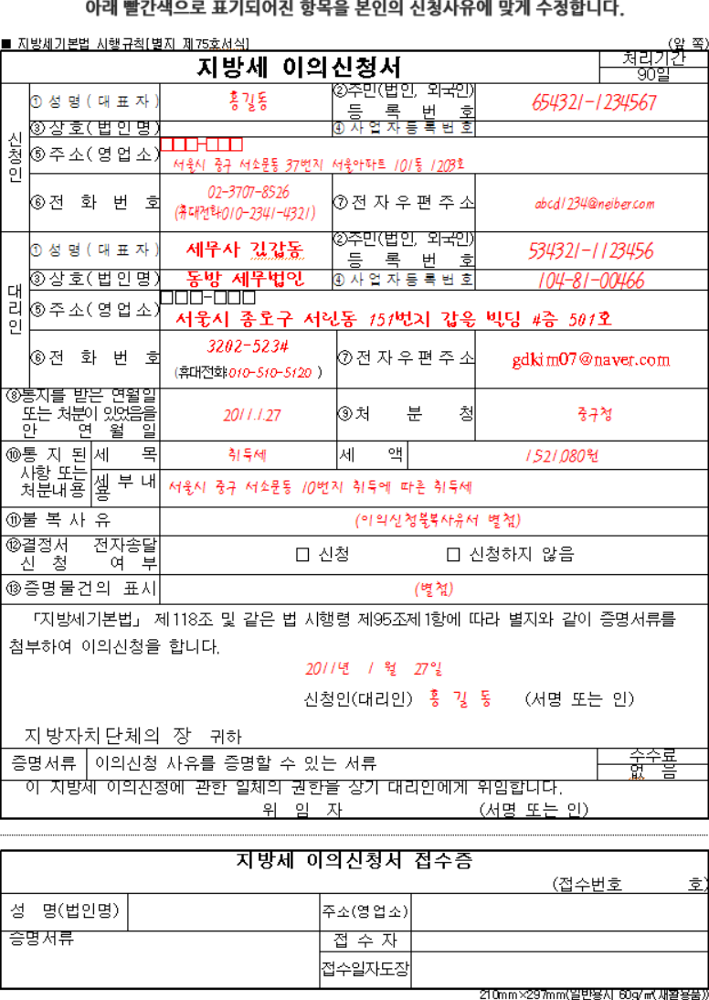

작성사례
이의신청
이의신청서 예시

아래 빨간색으로 표기되어진 항목을 본인의 신청사유에 맞게 수정합니다.
지방세기본법 시행규칙[별지 제75호서식](앞쪽)
| 지방세 이의신청서 | 처리기간 | |||
| 90일 | ||||
| 신청인 | ①성명(대표자) | 홍길동 | ②주민(법인,외국인) 등록번호 | 654321-1234567 |
|---|---|---|---|---|
| ③상호(법인명) | 내용없음 | ④사업자등록번호 | 내용없음 | |
| ⑤주소(영업소) | □□□-□□□ 서울시 중고 서소문동 37번지 서울아파트 101동 1203호 | |||
| ⑥전화번호 | 02-3707-8526(휴대전화 010-2341-4321) | ⑦전자우편주소 | abcd1234@neiber.com | |
| 대리인 | ①성명(대표자) | 세무사 김갑동 | ②주민(법인,외국인) 등록번호 | 534321-1123456 |
| ③상호(법인명) | 동방 세무법인 | ④사업자등록번호 | 104-81-00466 | |
| ⑤주소(영업소) | □□□-□□□ 서울시 종로구 서린동 151번지 갑을 빌딩 4층 501호 | |||
| ⑥전화번호 | 3202-5234(휴대전화:010-510-5120) | ⑦전자우편주소 | gdkim07@naver.com | |
| ⑧통지를 받은 연월일 또는 처분이 있었음을 안 연월일 | 2011.1.27 | ⑨처분청 중구 | 중구청 | |
| ⑩통지된 사항 또는 처분 내용 | 세목 | 취득세 | 세액 | 1,521,080원 |
| 세부내용 | 서울시 중구 서소문동 10번지 취득에 따른 취득세 | |||
| ⑪불복사유 | (이의신청불복사유서 별첨) | |||
| ⑫결정서 전자송달 신청 여부 | 체크박스 신청, 체크박스 신청하지 않음 | |||
| ⑬증명물건의 표시 | (별첨) | |||
|
「지방세기본법」 제118조 및 같은 법 시행령 제95조제1항에 따라 별지와 같이 증명서류를 첨부하여 이의신청을 합니다. 2011년 1월 27일 신청인(대리인) 홍길동 (서명 또는 인) 지방자치 단체의 장 귀하 |
||||
| 증명서류 | 이의신청 사유를 증명할 수 있는 서류 | 수수료 | 없음 | |
|
이 지방세 이의신청에 관한 일체의 권한을 상기 대리인에게 위임합니다. 위임자(서명 또는 인) |
||||
| 지방세 이의신청서 접수증(접수번호 호) | |||
|---|---|---|---|
| 성명(법인명) | 내용없음 | 주소(영업소) | 내용없음 |
| 증명서류 | 내용없음 | 접수자 | 내용없음 |
| 접수일자도장 | 내용없음 | ||
210mmX297mm(일반용지 60g㎡(재활용품))
이의신청불복상서
| 항목 | 항목 설명 |
|---|---|
| 신청취지 | ○○ 구청장이 신청인에게 2007.00.00.납기 한으로 부과 고지한 취득세 000,000원, 등록세 000,000원 합계 000,000원 이를 취소(또는 경정)한다. 라는 결정을 구합니다. |
| 처분청 과세처분 요지 | ○○ 구청장은 신청인이 2005.05.01. 신청인의 여동생 ○○○과 공동명의로 등록하여 서울특별시세 감면조례 제3조 규정에 의해 취득세 및 등록세를 면제 받은 ○○두 ○○○호 승용자동차(이하 “이건 자동차”라 하겠습니다)에 대하여 그 등록일로부터 3년 내에 세대별 주민등록표 상 세대분가를 하였다는 이유로 취득세 000,000원 등록세 000,000원 합계 000,000원을 2007.5.31. 납기 한으로 부과처분 하였습니다. |
| 신청인 불복사유 | 신청인은 2급 장애인으로 이건 자동차를 취득하여 서울특별시세 감면조례 제3조 규정에 의해 취득세 및 등록세를 면제 받았으나, 공동 등록 명의자인 여동생의 결혼으로 인하여 부득이 하게 이건 자동차를 신규등록한 날로부터 3년 내에 세대분가를 하였음에도 처분청이 여동생의 결혼 전에 세대분가를 하였다는 이유로 당초 과세 면제한 이건 자동차에 대하여 취득세 등을 추징한 것은 부당하므로 ○○구청장이 신청인에게 과세한 취득세 등의 부과처분을 취소하여 주시기 바랍니다. |
민원처리에 관한 법률(홈페이지안내, 제5조, 제21조, 제23조)
-
홈페이지 게시판 사용 안내
욕설 등 저속한 표현, 특정인에 대한 비방, 정치적 목적이나 성향이 있는 내용 등 서울시정과 무관한 민원은 민원처리에 관한 법률 제5조, 제21조에 의해 미답변 처리될 수 있으며 동일인 또는 동일인이라고 인정되는 자가 같은 내용을 3회 이상 반복적으로 제출하는 경우에는 제23조에 의해 종결 처리될 수 있습니다.
-
제5조(민원인의 권리와 의무)
-
①
민원인은 행정기관에 민원을 신청하고 신속·공정·친절·적법한 응답을 받을 권리가 있다.
-
②
민원인은 민원을 처리하는 담당자의 적법한 민원처리를 위한 요청에 협조하여야 하고, 행정기관에 부당한 요구를 하거나 다른 민원인에 대한 민원 처리를 지연시키는 등 공무를 방해하는 행위를 하여서는 아니 된다.
-
①
-
제21조(민원 처리의 예외)
행정기관의 장은 접수된 민원(법정민원을 제외한다. 이하 이 조에서 같다)이 다음 각 호의 어느 하나에 해당하는 경우에는 그 민원을 처리하지 아니할 수 있다. 이 경우 그 사유를 해당 민원인에게 통지하여야 한다.
-
1.
고도의 정치적 판단을 요하거나 국가기밀 또는 공무상 비밀에 관한 사항
-
2.
수사, 재판 및 형집행에 관한 사항 또는 감사원의 감사가 착수된 사항
-
3.
행정심판, 행정소송, 헌법재판소의 심판, 감사원의 심사청구, 그 밖에 다른 법률에 따라 불복구제절차가 진행 중인 사항
-
4.
법령에 따라 화해·알선·조정·중재 등 당사자 간의 이해 조정을 목적으로 행하는 절차가 진행 중인 사항
-
5.
판결·결정·재결·화해·조정·중재 등에 따라 확정된 권리관계에 관한 사항
-
6.
감사원이 감사위원회의의 결정을 거쳐 행하는 사항
-
7.
각급 선거관리위원회의 의결을 거쳐 행하는 사항
-
8.
사인 간의 권리관계 또는 개인의 사생활에 관한 사항
-
9.
행정기관의 소속 직원에 대한 인사행정상의 행위에 관한 사항
-
1.
-
제23조(반복 및 중복 민원의 처리)
-
①
행정기관의 장은 민원인이 동일한 내용의 민원(법정민원을 제외한다. 이하 이 조에서 같다)을 정당한 사유 없이 3회 이상 반복하여 제출한 경우에는 2회 이상 그 처리결과를 통지하고, 그 후에 접수되는 민원에 대하여는 종결처리할 수 있다.
-
②
행정기관의 장은 민원인이 2개 이상의 행정기관에 제출한 동일한 내용의 민원을 다른 행정기관
-
①